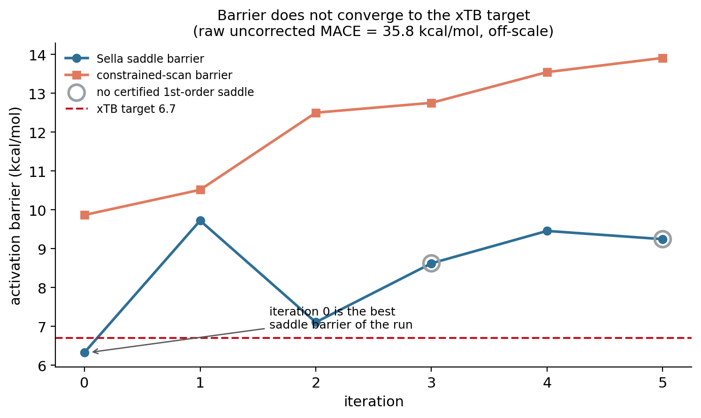
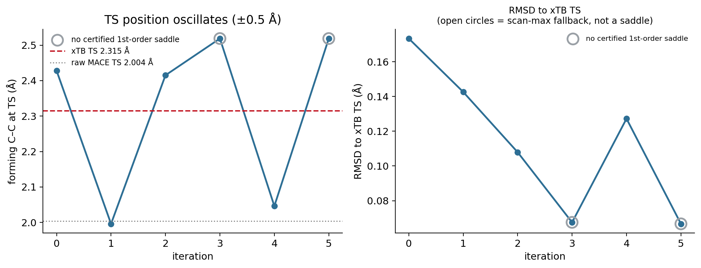
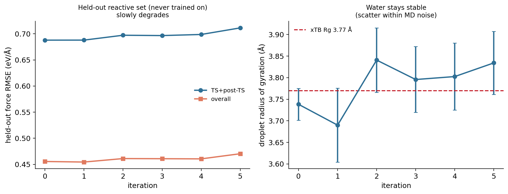

Pillar 4 — Iterative calibration
If targeted correction works once, does repeating it keep working? A negative result.
Scientific question If targeted calibration works once, can repeated xTB queries around the current transition state progressively improve the correction further?
Why we tested it
Pillar 3 showed that a single round of barrier-region data brings the certified corrected saddle to 6.33 kcal/mol against an xTB target of 6.7. The natural next move is a loop: find the current corrected saddle, ask the reference what it thinks there, add that data, refit, and repeat. If that converged, it would be the skeleton of a data-efficient calibration workflow.
The loop was run as a controlled experiment, not an autonomous system: the query rule was fixed by hand, and no acquisition function or uncertainty estimate was involved.
One iteration
- Relaxed concerted scan on the current corrected surface → scan barrier, and a seed geometry for the saddle search.
- Sella first-order saddle search from that seed.
- TS validity gate — the structure counts as a Diels–Alder saddle only if it converged, has exactly one imaginary mode, has forming C–C in 1.5–3.0 Å, and its imaginary mode overlaps the forming-bond coordinate by ≥ 0.30.
- Query GFN2-xTB at that geometry.
- Build a small local packet — the saddle itself, ±0.05 and ±0.10 Å along the imaginary mode, and 2 isotropic 0.05 Å perturbations: 7 new xTB calculations.
- Refit the same Delta architecture on the cumulative dataset.
Held fixed throughout: the correction architecture and every hyperparameter, and a 48-configuration held-out reactive split that is never trained on.
Key evidence
| iter | cumulative new xTB calls | certified saddle barrier | scan barrier | forming C–C | certified? | held-out TS+post RMSE | water R_g |
|---|---|---|---|---|---|---|---|
| 0 | 7 | 6.33 | 9.87 | 2.428 Å | yes | 0.6879 | 3.738 Å |
| 1 | 14 | 9.72 | 10.51 | 1.996 Å | yes | 0.6880 | 3.690 Å |
| 2 | 21 | 7.11 | 12.50 | 2.415 Å | yes | 0.6973 | 3.841 Å |
| 3 | 28 | 8.62 | 12.75 | 2.519 Å | no | 0.6966 | 3.796 Å |
| 4 | 35 | 9.46 | 13.54 | 2.046 Å | yes | 0.6987 | 3.803 Å |
| 5 | 42 | 9.25 | 13.91 | 2.519 Å | no | 0.7113 | 3.834 Å |
| xTB target | — | 6.7 | 6.7 | 2.315 Å | — | — | 3.77 |



Key result — negative A strong one-shot correction does not continue improving under repeated local TS queries with the fixed pairwise Delta architecture. Iteration 0 was the best model of the run. Across 5 iterations and 42 additional xTB reference calculations, the certified saddle barrier oscillated away from target (error 0.37 → 2.55 kcal/mol) and the constrained-scan barrier degraded monotonically from 9.87 to 13.91 kcal/mol.
Supporting observations:
- 2 of 6 iterations produced no certifiable first-order saddle (two imaginary modes), and fell back to the scan maximum as the query centre.
- Held-out reactive error worsens slightly: TS+post-TS RMSE 0.6879 → 0.7113 (+3.4%). The added data is not generalizing.
- Water remains stable — R_g spans 3.690–3.841 Å around the xTB reference of 3.77, within per-iteration MD standard deviations of 0.037–0.086 Å, with no condensation.
- The fit is not diverging. The Delta coefficient norm stays essentially constant (6.05, 5.95, 5.99, 5.97, 5.95, 6.11), so this is a fixed capacity being reallocated, not a numerically unstable regression.
Method control — seeding the saddle search An earlier version of this loop seeded each saddle search from the xTB TS, the strategy that works for raw MACE. On a corrected surface it fails: Sella converges to a spurious reactant-basin saddle at 3.20 Å whose imaginary mode is orthogonal to bond formation (overlap 1.2e−06) and whose “barrier” is −3.84 kcal/mol, below the reactant. That run is retained as a negative control. The fix — seeding from each iteration’s own relaxed-scan maximum, plus the validity gate above — follows the project’s existing convention for saddle searches.
A metric not to over-read The cosine between corrected and xTB forces at a converged saddle is meaningless: the corrected force is ~1e−4 eV/Å there by construction, so the cosine is a 0/0 noise ratio. The interpretable quantity is xTB’s own residual force at the corrected saddle, which oscillates over 0.43–2.81 eV/Å with no systematic decrease.
What we learned
More targeted reference data is not automatically better for a fixed correction architecture. The result is specific and bounded: this correction form, this acquisition rule, this system, this budget.
Two mechanistic observations point the same direction. The Delta is a sum of radial pair potentials with no angular or many-body terms, while the position and curvature of a cycloaddition saddle depend on angular reorganization of the forming ring. And xTB is never near-stationary at the corrected saddle (0.43–2.81 eV/Å), so force-matching there asks the correction to reproduce a large reference gradient at a point the corrected model believes is stationary — a directly conflicting demand.
What this does and does not claim The behaviour is consistent with a correction-capacity limitation, which motivates a controlled capacity ablation. That is a supported hypothesis, not a demonstrated result — establishing it requires holding the acquisition rule fixed while varying the correction’s expressiveness. This experiment does not show that active learning fails: no acquisition metric, uncertainty estimate, or autonomous sampling was implemented here.
Next question
Is correction-model capacity the bottleneck? The discriminating experiment holds the acquisition rule fixed and varies expressiveness — angular or three-body terms, a larger cutoff, more radial channels. If a richer correction converges on the same 42-query budget, the ceiling is architectural and an acquisition metric becomes worth building. If it does not, no acquisition function would rescue the loop.